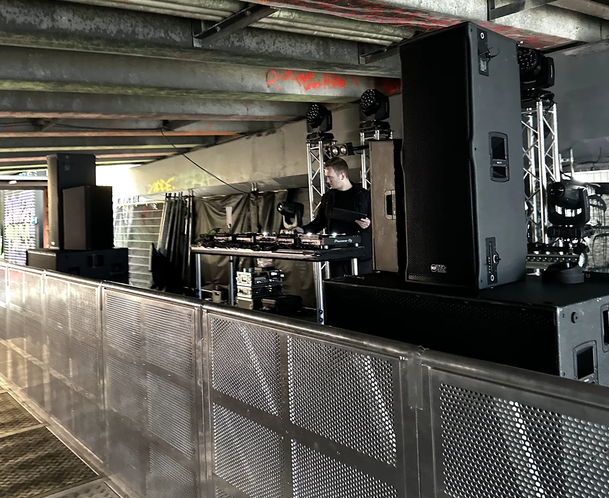

We hire out speakers for everything from backyard parties to multi-stage festivals. Point source tops for smaller gigs. Line arrays when you need throw and coverage across a big crowd. Subs that actually hit. We keep our gear well maintained and sounding clean, because nobody wants a rig that's been thrashed for five years and never serviced.
Most of our speaker hire goes out with an operator who knows the system and the venue. But if you're comfortable running your own setup, we do dry hire too. We'll drop it off, walk you through patching, and pick it up when you're done.
Solid, punchy, and straightforward. Our point source boxes are great for smaller venues, side stages, and anywhere you need clear audio without a massive rig. Good for speeches, DJ sets, and live bands up to a few hundred people.
When the crowd gets bigger, you need even coverage from front to back. Our line array systems give you that throw and control. We use these on festival main stages and larger outdoor events where point source just won't cut it.
Need a simple setup for a party or small event? We have DJ-ready speaker packages with tops, subs, and all the cables you need. Just plug in and go. Pair it with a DJ booth package for a full setup.
We're a small Christchurch crew that cares about how things sound. We've put speakers in warehouses, on farms, in town halls, and on festival stages for clients like Red Bull and Rhythm and Vines. The gear is good. The people running it know what they're doing.
If you're after a full PA system with mixing desk and monitors, we do that too. Or if this is part of a bigger production with AV, lighting, and staging, we can handle the lot. Check out our services page or get in touch for a quote.

Tell us about your event and we'll put a package together.
Get in touch or call 021 178 0355.
It depends on the size of the system. A small party setup with tops and a sub starts from around $250. Larger point source and line array rigs for festivals are quoted per event. Get in touch with your event details and we'll put a price together.
That depends on the venue, crowd size, and whether it's indoors or outdoors. For a house party or small bar, a single pair of tops and a sub will do the job. For 200+ people or outdoor events, you'll want a bigger rig with more subs and possibly delays. Tell us about your event and we'll recommend the right setup.
Yes. We deliver, set up, tune, and pack down. We can also do dry hire if you know what you're doing and want to handle it yourself.
All Ears Events Limited
20 Southwark Street, Christchurch
021 178 0355 · hello@allears.nz
Mon-Fri 9am-4pm